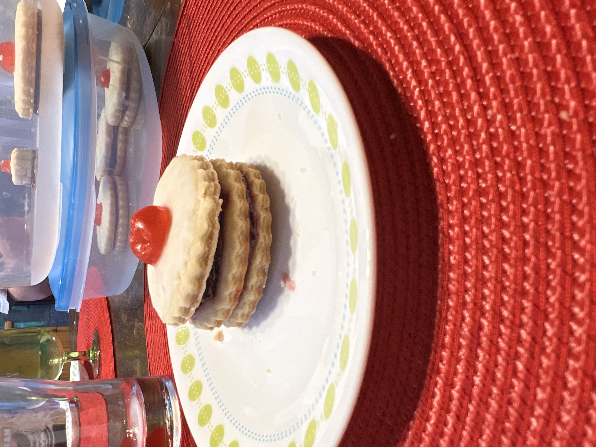

Empire Cookie Recipe
History
Britain found itself facing both Germany and the Austro-Hungarian Empire in the war, so Deutsch, German and Linzer Biscuits all suddenly felt like unpatriotic names. Because of this (bear in mind this was still in the days of the British Empire), the more patriotic name of Empire Biscuit was born.
Empire Biscuits/Empire Cookies are simply classic Scottish bakery fare. Two plain biscuits are sandwiched together, topped with icing and a candied cherry.
Ingredients
- Jam filled shortbread cookies have been a longtime favorite on Scottish and English tea tables. Now popular in Canada! Store in a covered tin.
- ½ cup butter
- ½ cup white sugar
- 1 egg
- 1 teaspoon vanila extract
- 2 cups all-purpose flour
- 1 teaspoon baking powder
- ½ cup raspberry jam
- 1 cup confectioners' sugar
- ¼ teaspoon almond extract
- 1 tablespoon hot water
- ¼ cup candied cherries, chopped

Directions:
- Cream butter. Add sugar, creaming well. Beat in egg and vanilla. Combine flour and baking powder; gradually add to creamed mixture.
- On a lightly floured surface, roll out dough to 1/8 inch thickness. Cut into 2 inch rounds, and place on ungreased baking sheets.
- Bake at 350 degrees F (175 degrees C) for 10 minutes, or until very lightly browned at edges. Cool thoroughly.
- Spread half of the cookies with jam, and top with remaining cookies.
- Combine confectioners' sugar, almond extract, and enough hot water to make a thin icing. Frost tops of cookies. Top each with a small piece of candied cherry.
Video:
Reference List Entry
Recipe by Marguerite (Updated on July 14, 2022) The recipe for Empire Cookies
All Recipes Link
Story/History by the graham family
Empire Cookie History